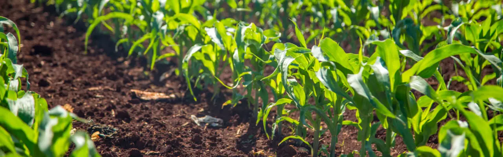

Fertilidad Del Suelo, Cómo Medirla Y Mejorarla?
La fertilidad del suelo es fundamental para el desarrollo de las plantas e influye en su rendimiento. Los campos fértiles son un gran activo para los agricultores, pero una gestión agrícola inadecuada puede llevar al agotamiento de la tierra y un descenso notorio del rendimiento. El suelo fértil viene determinado por características que van más allá de la cantidad y disposición de los nutrientes, también por la presencia de organismos beneficiosos y la estructura de las capas. De ahí la importancia de los fertilizantes, especialmente los orgánicos, y los métodos de cultivo respetuosos con el medioambiente para mantener o aumentar la fertilidad del suelo. Veamos cómo mejorar la fertilidad del suelo y qué aspectos hay que tener en cuenta cuando trabajemos en esta tarea.
¿Qué Es Un Suelo Fértil?¿Por Qué Es Importante?
La fertilidad del suelo hace referencia al potencial de un suelo para crear unas condiciones químicas, físicas y biológicas favorables para las plantas, proporcionándoles todos los nutrientes esenciales para su crecimiento. Es necesario entender que los nutrientes minerales no son alimento para las plantas (porque las plantas producen alimento por sí mismas mediante la fotosíntesis), sino un suplemento que proporciona más energía para su desarrollo. Así pues, se considera suelo fértil a aquel que cumple esta condición. Los nutrientes pueden acelerar el crecimiento de las plantas, reforzar su sistema inmunitario contra plagas y enfermedades y aumentar la fertilidad. El suelo fértil es perfecto para los cultivos porque retiene un nivel medio o alto de microelementos y macroelementos valiosos, lo que garantiza la fuerza y la salud de las plantas durante todo el ciclo de desarrollo. Nunca se insistirá lo suficiente en la importancia de un suelo fértil. Por ello, la fertilidad del suelo es uno de los principales factores que deben tener en cuenta los productores agrícolas a la hora de planificar el trabajo de campo.
¿Cuál es la diferencia entre suelo fértil y suelo productivo?
La fertilidad define la capacidad del suelo para retener y proporcionar nutrientes a las plantas. Entonces, ¿los suelos fértiles son siempre productivos? No, la productividad incluye el concepto de fertilidad, así como muchos otros factores que determinan la capacidad del suelo para producir un cultivo.Ramas de la Agronomia
Los factores que afectan a la fertilidad del suelo se clasifican en directos e indirectos. La cantidad de materia orgánica, la humedad y la aireación del campo son factores directos de fertilidad. Los indirectos incluyen la actividad de la biota del suelo, los métodos de labranza y más. Los factores más importantes de la fertilidad del suelo son los siguientes.
Contenido De Humus
La fertilidad del suelo es proporcional a la cantidad de humus presente. El humus contiene nutrientes, concretamente nitrógeno y fósforo, necesarios para la mayoría de las plantas. El humus aumenta la fertilidad del suelo, creando un microclima ideal para el desarrollo de los cultivos, con una temperatura favorable, humedad y aire adecuados. El contenido de humus está estrechamente relacionado con los distintos tipos de suelo.¿Qué tipo de suelo es más fértil?
La marga se considera el tipo de suelo más fértil, ya que se compone de una proporción óptima de arcilla, arena y limo, combinando sus mejores propiedades químicas y físicas. Al mismo tiempo, parece ser el suelo más rico en humus. Y, al igual que otros tipos de suelos con fertilidad elevada ricos en humus, la marga favorece el crecimiento de los cultivos y un alto rendimiento.Textura Del Suelo
El tamaño de las partículas y su proporción en el suelo determinan su textura. Los suelos con partículas pequeñas, concretamente la arcilla, tienen una estructura densa que actúa como contenedor de nutrientes. Al mismo tiempo, dicha estructura puede dificultar el acceso de las raíces de las plantas a los nutrientes disueltos en el agua.